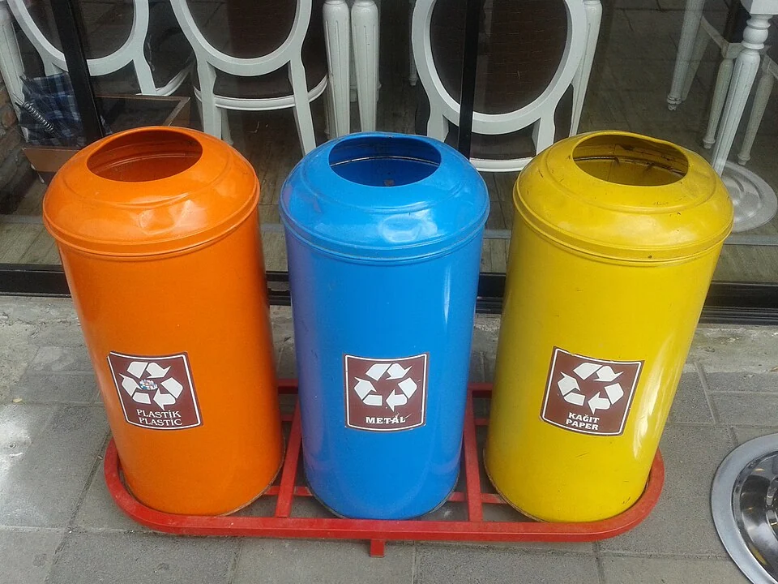

Bir plastik şişeyi ayrı kutuya attığımızda, içimiz rahatlıyor: “Geri dönüştürülecek.” Fakat o kutudan çıkan atık sınırı geçip başka bir ülkeye gittiğinde hikâyenin sonunu çoğumuz göremiyoruz. Türkiye’ye gerçekten ne kadar plastik atık geliyor? Hangi ülkelerden? Ve “geri dönüşüme gönderildi” ifadesi, malzemenin sonunda yeni bir ürüne dönüştüğünü kanıtlıyor mu? Veriler büyük bir ticaret akışını gösteriyor; sahadaki araştırmalar ise en azından bazı sevkiyatların bu temiz hikâyeye uymadığını ortaya koyuyor.
Rakamlar: Türkiye’ye hangi ülkelerden geliyor?
Birleşmiş Milletler’in UN Comtrade veri tabanında, plastik atık, döküntü ve hurdasını kapsayan HS 3915 koduyla Türkiye’nin 2024 ithalatı yaklaşık 677.663 ton net ağırlık olarak raporlandı. Aynı kayıtta en büyük üç ticaret ortağı Birleşik Krallık (141.317 ton), Almanya (87.437 ton) ve Belçika’ydı (53.708 ton). Yalnızca bu üç ülkeden bildirilen miktar yaklaşık 282 bin tona ulaşıyor.
| 2024’te bildirilen ortak ülke | Net ağırlık |
|---|---|
| Birleşik Krallık | 141.317 ton |
| Almanya | 87.437 ton |
| Belçika | 53.708 ton |
| Toplam ithalat (HS 3915) | 677.663 ton |
Bu rakamları doğru okumak önemli. HS 3915, yalnızca evlerden toplanmış ambalajları değil, plastik atık, kırpıntı ve hurdasını kapsayan bir gümrük sınıflandırmasıdır. İstatistik, malzemenin hangi tesise gittiğini, ne kadarının ayıklandığını ya da nihayetinde kaç ton kullanılabilir ham madde çıktığını söylemez. Başka bir deyişle, ithalat miktarı geri dönüşüm miktarı değildir. Avrupa Komisyonu da Türkiye’yi 2023’te AB’den çıkan atıkların başlıca varış noktası olarak gösteriyor; ancak bu toplam bütün atık türlerini içeriyor, yalnızca plastikleri değil.
“Geri dönüşüme gönderildi” demek, geri dönüştürüldü demek değil
Plastik atığın ticareti her durumda yasa dışı ya da anlamsız değildir. Temiz, türüne göre ayrılmış PET, PE veya PP hurdası, uygun bir tesiste işlenirse üretimde kullanılabilecek ikincil ham maddeye dönüşebilir. Böyle bir akış, yeni plastik üretimi için gereken ham maddeyi azaltma potansiyeli taşır. Sorun, “potansiyel” ile gerçekleşmiş sonucu aynı şeymiş gibi anlatmaya başladığımız yerde ortaya çıkar.
Bir sevkiyatın ihracat evrakında “geri kazanım” ya da “geri dönüşüm amacıyla gönderiliyor” diye yer alması, işlemin başarıyla tamamlandığını tek başına kanıtlamaz. Yük geldiğinde içindeki karışık ve kirli malzemenin ne kadarı ayrılır? Gerçekten granül ya da yeni bir ürün hâline gelen miktar nedir? Geri kalan kısmı nerede depolanır, yakılır veya bertaraf edilir? Bu sorulara yanıt verecek izlenebilir bir bilanço yoksa, ihracatçının gönderdiği tonajı “geri dönüştürülmüş plastik” diye sunmak gerçeği olduğundan parlak gösterir.
“Geri dönüşüm yalanı” tam da burada dikkatli kullanılmalı. Türkiye’ye giren her plastik yükünün çöpe döküldüğünü söylemek için elimizde kanıt yok; aynı şekilde her yükün geri dönüştürüldüğünü söylemek için de yalnızca gümrük kaydı yetmez. Yalan, geri dönüşüm iddiasının sonucunu ölçmeden, sınırdan geçen miktarı başarı hikâyesi gibi anlatmakta başlar.
Adana’daki bulgular neyi gösterdi?
Bu kuşku yalnızca varsayımdan ibaret değil. Greenpeace’in 2021’de yayımladığı saha araştırması, Adana çevresindeki on noktada yol kenarlarına, tarlalara ve su kanallarına dökülmüş plastikleri belgeledi. Araştırmacılar, atıkların arasında Birleşik Krallık ve Almanya’daki marketlerle ilişkilendirilebilen ambalajlar buldu; bazı yığınların yakıldığını veya yanmakta olduğunu kaydetti. Dönemin haberlerinde Birleşik Krallık’ın Türkiye’ye plastik atık ihracatının 2020’de 209.642 tona çıktığı da aktarılmıştı.
Bu çalışma önemli bir kanıt, ama her şeyi kanıtlamıyor. Belirli bir zamanda, belirli noktalarda yapılan araştırma; Türkiye’ye gelen bütün plastiklerin aynı biçimde atıldığını, bugün de aynı oranların sürdüğünü ya da söz konusu ambalajların her birinin hangi tesisten çıktığını göstermez. Dürüst bir değerlendirme hem bu sınırı kabul eder hem de belgelenen yakma ve dökme vakalarını “istisna olabilir” diye önemsizleştirmez. Bu, kamunun ve düzenleyicilerin takip etmesi gereken gerçek bir denetim sorunudur.
Atıkların yakılması ve açıkta bırakılması yalnızca görüntü kirliliği yaratmaz. Yanma, plastik türüne ve koşullara bağlı olarak sağlığa zararlı kirleticiler çıkarabilir; rüzgâr ve su da parçalanan atıkları çevreye taşır. Plastiklerin deniz ekosistemine etkisini okyanuslar hakkındaki yazımızda ayrıca ele alıyoruz. Buradaki temel nokta ise basit: Atık, ülkeden çıkınca ortadan kaybolmaz; başka bir yerde, çoğu zaman o yükü üretmeyen insanların yaşadığı çevrede kalır.
Kurallar var; kritik soru uygulama
Uluslararası düzenleme, “her türlü plastik her yere gönderilebilir” demiyor. Basel Sözleşmesi’nin 1 Ocak 2021’de yürürlüğe giren plastik atık değişiklikleri, karışık veya kirli atıkların sınır ötesi hareketini daha sıkı denetime bağladı. İstisna kapsamındaki B3011 akışı için belirli polimerlerin ayrılmış olması, atığın neredeyse kirlenmemiş bulunması ve çevreye uygun biçimde geri dönüştürülecek olması gerekiyor. Bu koşulları sağlamayan plastik atıklar çoğunlukla ön bildirim ve izin sürecine tabi Y48 kapsamında değerlendiriliyor.
Avrupa Birliği’nin yeni Atık Sevkiyatı Tüzüğü 2024’te yürürlüğe girdi; hükümlerin çoğu Mayıs 2026’da, ihracatla ilgili yeni kuralların çoğu ise 21 Mayıs 2027’de uygulanmaya başlayacak. Türkiye OECD üyesi olduğu için, OECD dışı ülkelere yönelik genel ihracat yasağıyla aynı kategoride değil. Bununla birlikte AB, OECD ülkelerine giden sevkiyatları izleyecek; çevreye zarar riski bulunan plastik atık ihracatını askıya alma ve tesislerin çevreye uygun yönetim kapasitesini denetleme imkânı getirecek. Yani “Avrupa artık Türkiye’ye plastik gönderemiyor” demek de mevcut kuralları yanlış anlatır.
Kağıt üzerindeki şartlarla sahadaki sonuç arasındaki mesafe, açık ve denetlenebilir kayıtlarla kapanabilir: Tesise giren atık miktarı, geri kazanılan ürün, süreçte kayba uğrayan malzeme ve geriye kalan atık aynı zincirde izlenmeli. Bağımsız tesis denetimleri ve kamuya açık ithalat verileri de bu zincirin parçası olmalı. Bir şirket “geri dönüştürüyoruz” diyorsa, ne kadarını, hangi yöntemle ve hangi tesiste dönüştürdüğünü gösterebilmelidir.
Asıl mesele: çöpü göndermek mi, azaltmak mı?
Plastik ticareti çoğu zaman ekonomik bir başarı gibi sunuluyor: Bir ülke atığını ihraç ediyor, diğeri ucuz ham madde alıyor. Fakat bu anlatı, ambalajın ne kadarının gerçekten yeniden üretime girdiğini ve işlenemeyen kısmın yükünü kimin taşıdığını sormadan tamamlanmış sayılmaz. Türkiye’de de kendi atıklarımız için toplama ve ayrıştırma sistemleri güçlenmeden, ithal hurdayı bir “geri dönüşüm başarısı” olarak göstermek doğru olmaz.
Elimizdeki veriler iki şeyi aynı anda söylüyor: Türkiye’ye büyük miktarda plastik atık ve hurda girişi var; en azından 2021’deki saha araştırması, bazı yabancı ambalajların Türkiye’de açıkta bırakıldığını ve yakıldığını belgeledi. Ama bu veriler, her sevkiyatın çöp olduğunu kanıtlamıyor. Bu yüzden başlıktaki “yalan”ı bütün geri dönüşüm faaliyetlerine değil, kanıtlanmayan bir sonucu olmuş gibi sunan iddiaya yöneltmek daha adil. Gerçek geri dönüşüm, yalnızca atığın gönderilmiş olmasıyla değil; ölçülmüş çıktı, izlenebilir tesis ve güvenilir denetimle anlaşılır.
Kaynaklar 12 Kasım 2026 itibarıyla kontrol edildi. UN Comtrade verileri gümrükte beyan edilen ticareti gösterir; nihai işlem sonucunu değil. Greenpeace araştırması 2021’deki saha gözlemlerine dayanır ve tüm ithalatı temsil eden bir ölçüm olarak kullanılmamalıdır.
Kaynaklar
- United Nations Statistics Division, UN Comtrade Database. Türkiye, 2024 ithalatı, HS 3915 (plastik atık, kırpıntı ve hurdası), net ağırlık ve ticaret ortakları. Veri sorgusu.
- Basel Convention, Plastic Waste Amendments; B3011 ve Y48 kapsamı ile atık sevkiyatı kuralları.
- European Commission, Waste Shipments; yeni Atık Sevkiyatı Tüzüğü, uygulama tarihleri ve ihracat denetimleri.
- Eurostat, Waste shipment statistics; Türkiye’nin 2023’te AB’den çıkan toplam atık için başlıca varış noktası olduğu bilgisi. Bu veri yalnızca plastikleri kapsamaz.
- Greenpeace International, 2021 Adana saha araştırması; Birleşik Krallık ve Almanya ambalajlarıyla ilgili bulgular.
- Sandra Laville, The Guardian, “UK plastics sent for recycling in Turkey dumped and burned, Greenpeace finds”, 17 Mayıs 2021.
- Fotoğraf: E4024, Waste bins in Turkey, CC BY-SA 4.0.